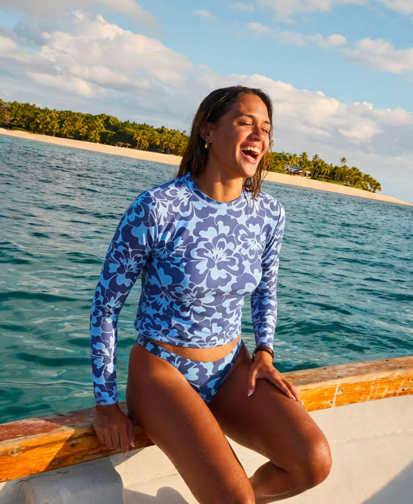
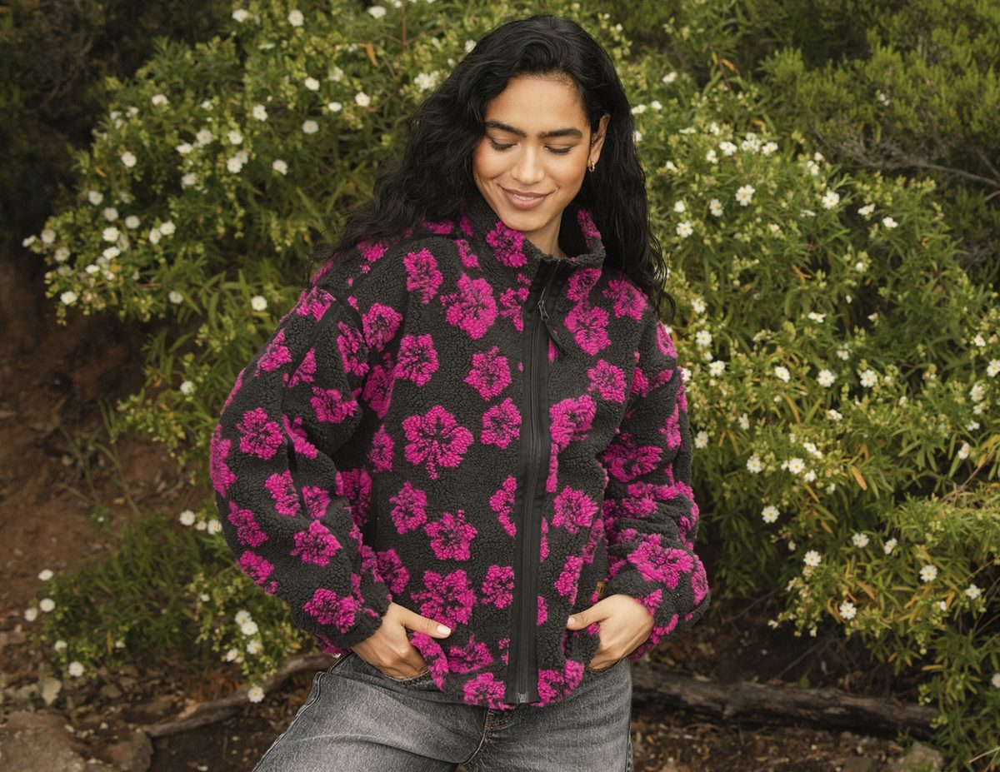
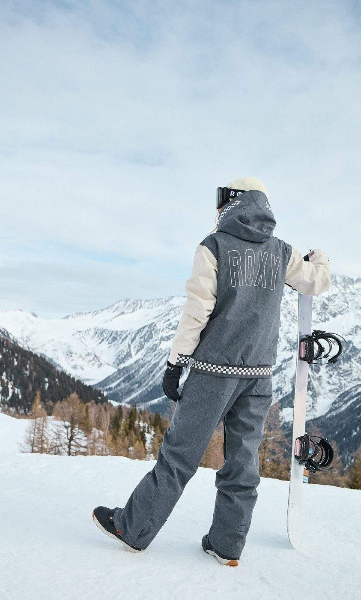
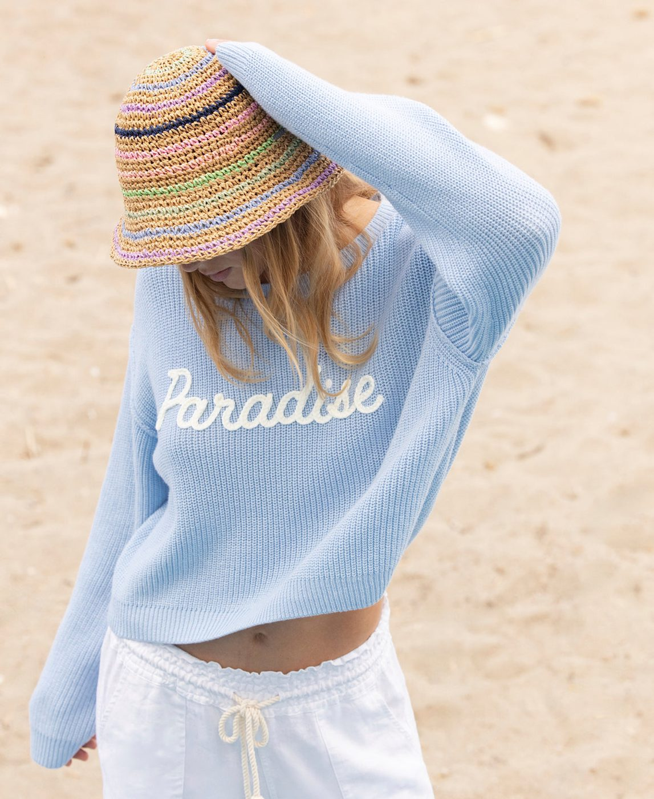
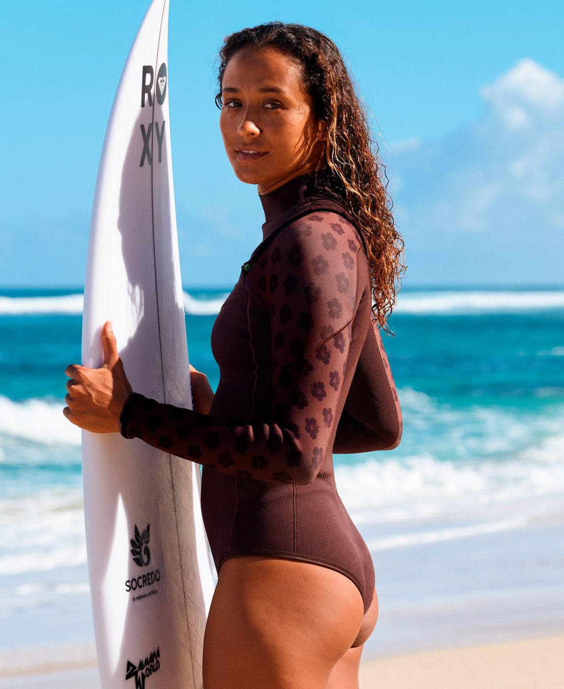
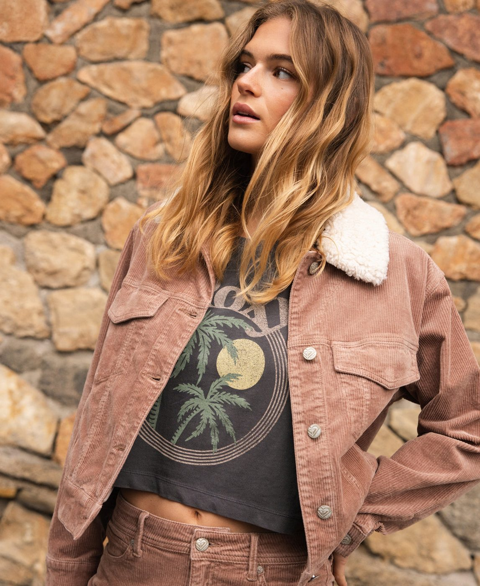

Roxy
Company study · 2026-11-20
Sunlit and easy. Roxy photographs women on bluffs, boats, beaches and snow in warm daylight, wearing floral dresses, rashguards, soft knits and a cord jacket. Color runs from sky mist and sand cream to caramel and clay rose, with one hot magenta or red print as the accent. The look is relaxed holiday more than performance.
 (01)
(01)


(02)

(03)

(04)

(05)

(06)

(07)Palette · measured from images
#E4EEF7#E9D5C0#2B201C#D0986E#9D7460#A1B5CAVisual themes
- Holiday light
- Key motifs: bluffs, beaches, boats, golden daylight. Sub motifs: sunsets, palms, stone walls.
- Florals and prints
- Key motifs: red and magenta florals, blue floral rashguards, island prints. Sub motifs: fleece and knit florals.
- Soft layers
- Key motifs: powder-blue script sweater, cord jacket with sherpa collar, bucket hat. Sub motifs: faded graphic tees, cream shorts.
- Surf and snow
- Key motifs: springsuit, surfboard, puffer vest, mountain backdrop. Sub motifs: black technical pieces against bright sky.
Color palette
- Sky mist #e4eef7
- Open sky and snow.
- Sand cream #e9d5c0
- Beach sand and cream knit.
- Night brown #2b201c
- Hair, wetsuit and shadows.
- Sun caramel #d0986e
- Sun-lit skin and golden stone.
- Clay rose #9d7460
- Dusty pink jacket and warm skin.
- Sea haze #a1b5ca
- Water and powder-blue knit.
Visual elements
- Photography
- Location images of one woman in natural light, often looking away from the lens; square and portrait category tiles for the navigation.
- Type and graphics
- A tall vertical wordmark with a heart logo on campaign tiles, script lettering on knits.
- Layout habits
- The home page runs campaign banners for the season, then category tiles; navigation reads Gifts, New, Surf, Swim, Clothing, Snow and Girls.
Notable products
- Floral dresses
- Midi, mini and maxi lengths in red, pink and white.
- Rashguards and springsuits
- Printed and black surf pieces.
- Sherpa-collar jacket
- Dusty-pink cord shell.
Method and limits
- Palette basis
- the seven board images; k-means in Lab, six clusters kept; skin, sand and sky are part of the measurement, so vivid print colors are under-counted
- Limits
- Pages read 2026-11-20, plain HTTP fetch, no login: https://www.roxy.com/ and the all-clothing, dresses, all-surf, all-swim and best-sellers collections. Images are the site’s own tiles at width 1200 of the same file. Fabric content and construction are not stated; colors are measured from lit, edited photographs.
Credits and licenses
(01) Woman in a red floral sundress on a grassy bluff above the sea. Roxy. Brand image, study use. source
(02) Laughing woman in a blue floral long-sleeve rashguard on a boat, island behind. Roxy. Brand image, study use. source
(03) Magenta floral fleece jacket worn over denim in front of a flowering shrub. Roxy. Brand image, study use. source
(04) Snow day: gray puffer vest and pants, mountains and a ski behind. Roxy. Brand image, study use. source
(05) Powder blue sweater with white script lettering and a striped straw bucket hat on a beach. Roxy. Brand image, study use. source
(06) Woman in a black long-sleeve springsuit holding a white surfboard, waves behind. Roxy. Brand image, study use. source
(07) Dusty-pink corduroy jacket with a sherpa collar over a faded graphic tee, stone wall behind. Roxy. Brand image, study use. source